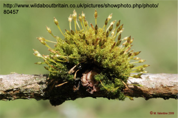

BIOL 210 Problem Set 3 KEY
Week 3, Sep 16-20
ps3key.RmdQuestion Key
- Consider the processes of cell reproduction.
- How is cell division similar and different in prokaryotic and eukaryotice cells?
-
In eukaryotes, linear chromosomes are organized such that each daughter cell receives a copy of each chromosome and not a random subset of all chromosomes. In contract, prokaryotes that have a single circular major chromosome do not require this added organization. For what it’s worth, archaeans may have linear or circular chromosomes but so far do not seem to have the organized process of mitosis, rather some archaeans have a random division of genetic material. In this case, they may have many copies of each different chromosome so that daughter cells are likely to end up with at least one copy of each unique chromosome. -
The eukaryotic nucleus also necessitates additional steps compared to prokaryotes as the nucleus must be dissolved to allow for segregation of genetic material and then later reconsituted around the new daughter cell’s genetic info. -
Eukaryotes may do cellular reproduction either via mitosis or meiosis. Mitosis maintains ploidy (haploid to haploid OR diploid to diploid) while meiosis reduces ploidy from diploid in the parent cell to haploid in the daughter cells. Prokaryotes are considered haploid and thus do not undergo ploidy changes. -
Prokaryotes may employ binary fission but sometimes the result of this is genetically identical but phenotypically different daughter cells (for example, in Caulobacter). Eukaryotes can also produce phenotypically different daughter cells (asymmetric cell division), but the types of cell phenotypes vary depending on which prokaryote or eukaryote (and which cell types, if a eukaryote).
In the fruit fly Drosophila melanogaster, a new zygote is created when sperm fertilize eggs inside the female parent’s oviduct. The sperm and eggs are haploid, the products of meiosis, while the new zygote is diploid. The female parent then lays the fertilized egg (zygote) on a suitable food source. Eggs are white, ovoid, and about 0.5 mm long. About 21 hours after they are laid, eggs hatch and the larvae emerge. The larvae develop in stages known as instars, which are common to many insect species. The newly emerged larvae, known as the first instar, are voracious eaters. They are tiny and difficult to see with the naked eye. The larvae grow rapidly, and within about two days, the first instar will molt into the second instar. These larvae will eat, grow, and molt again to become the third instar. After the third instar crawls out of the food and onto the surface, the larvae begin to pupate. In the pupal stage, the larval body shortens and the cuticle hardens and becomes pigmented, developing into the pupal case. Metamorphosis occurs within the pupal case; dormant localized tissues that originated during the embryonic stages develop into their adult forms, while the remaining larval tissue is broken down to furnish both raw material and the energy needed for adult development. After three days, the adult emerges. The adult flies reach sexual maturity and begin producing new gametes about eight hours after emerging from the pupae, and then the cycle can begin again.
For each of the following, indicate whether the situation describes cells that are haploid or diploid and whether mitosis or meiosis is occurring:
- sperm produced in the male fly
- unfertilized eggs produced in the female fly
- a new zygote before the egg has hatched
- 1st instar larvae growing rapidly
- 3rd instar larvae growing rapidly
- a pupa develops into an adult
- the body cells of an adult fly
- What are three ways in which meiosis differs from mitosis?
-
Meiosis occurs only in diploid (or higher ploidy) cells and produces daughter cells that are haploid. Mitosis can occur in cells of any ploidy but the daughter cells have the same ploidy as the parent cell. -
In meiosis, homologous chromosomes undergo synapsis, allowing for crossing-over between chromatids, thus possibly producing new genetic combinations of information. In mitosis, homologous chromosomes do not pair up and thus do not undergo recombination. -
In meiosis, there are two rounds of segregation that occur: (1) separation of homologous pairs and (2) separation of sister chromatids. There’s only one in mitosis: separation of sister chromatids. -
The starting state of diploid cells is the same for mitosis and meiosis: there are pairs of replicated homologous chromosomes. However, the end state is different b/c mitosis here yields 2 diploid daughter cells while meiosis yields 4 haploid daughter cells. -
Meiosis produces genetically unique daughter cells, different from the parent cell. Mitosis produces genetically identical daughter cells, same as the parent cell.
Among the related readings are a couple of chapters from Gathering Moss (The Advantages of Being Small and Back to the Pond). In Back to the Pond, Kimmerer talks about the moss life cycle, which is different from that of vascular plants. Check out the graphic of a moss life cycle from Biology 2e (link). Note that mosses belong to a group called the bryophytes. Then examine the image below.
What can you tell me about the parts of the moss life cycle that are visible to you in this image? How do moss life cycles differ from those of vascular plants such as angiosperms and gymnosperms?